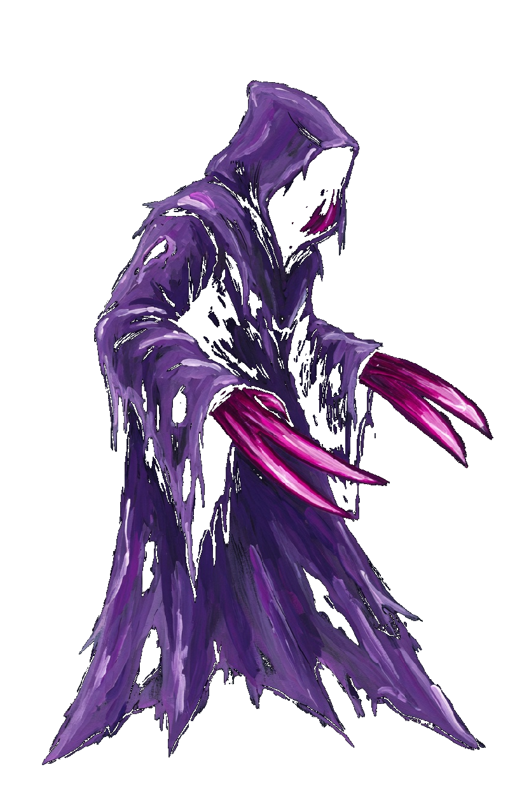
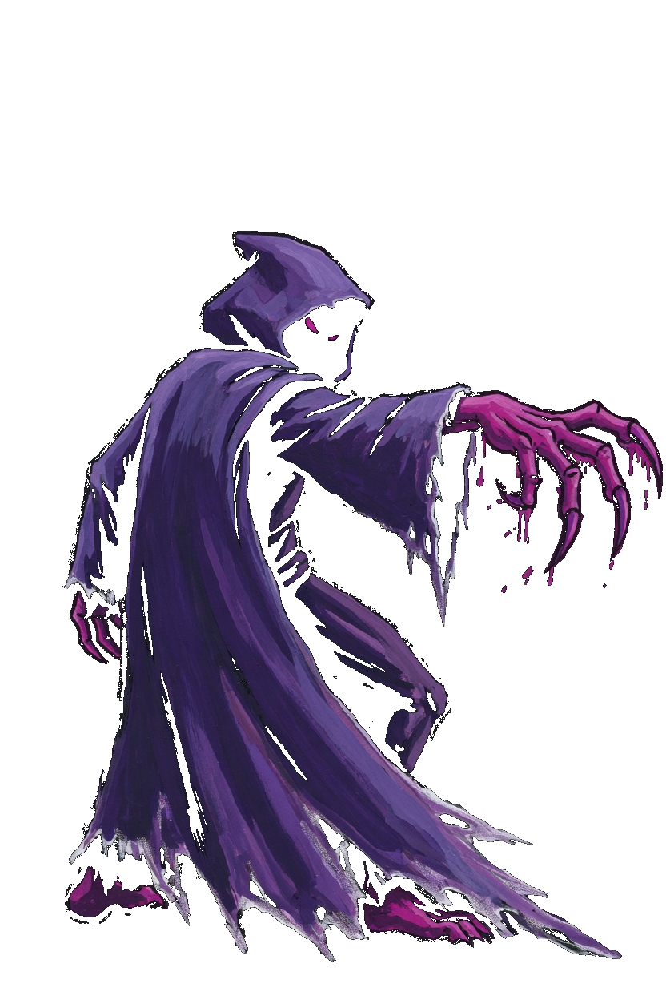
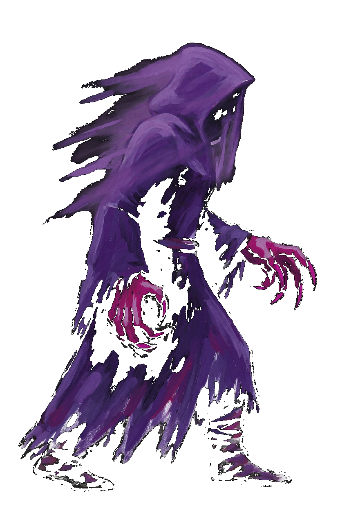
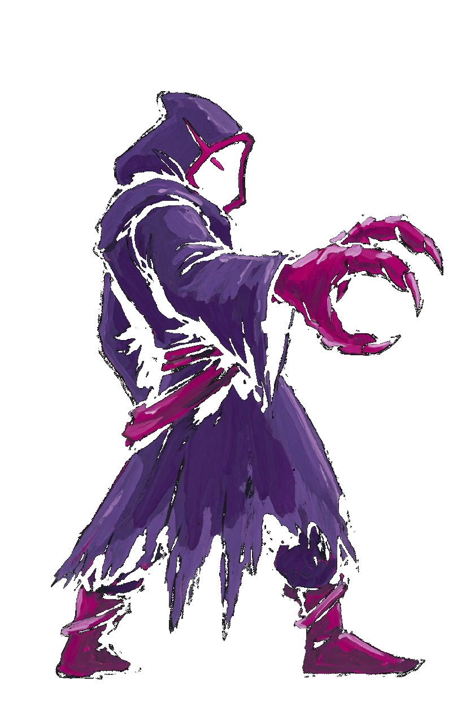
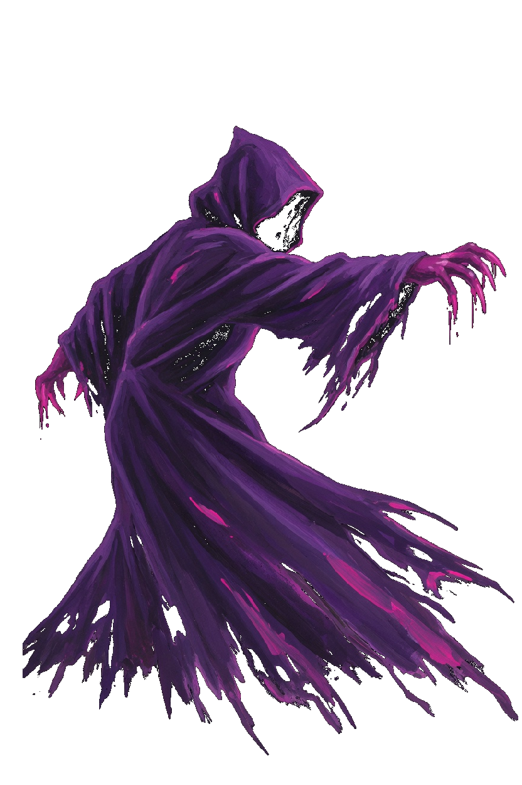
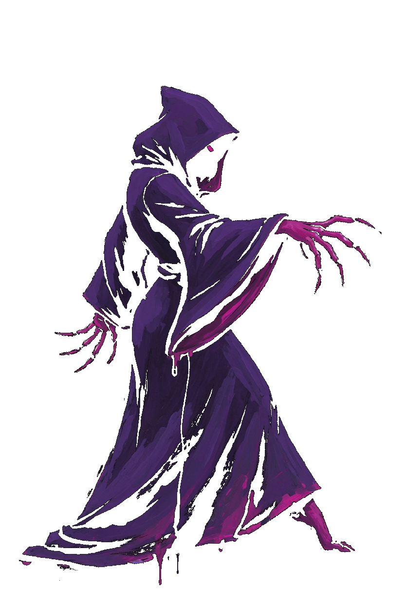
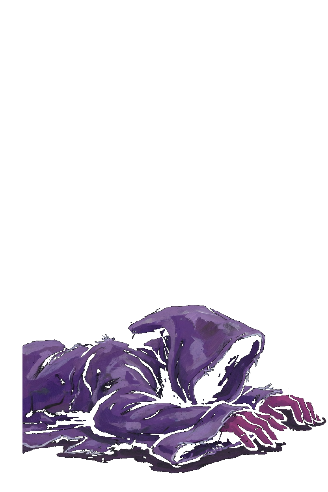
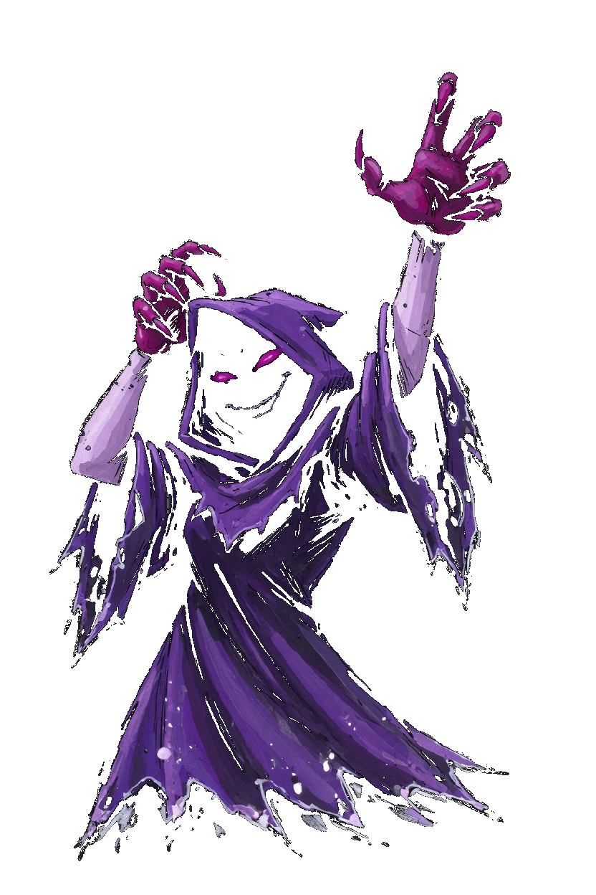

Shade · Veilkin
This card is the only pose list. A later frame has to match one of these keys. Native facing is right. The whole sprite flips. Violet hood, dark face, two magenta claws, ragged hem. The hem is the foot line. Shade is a fist, so the corner step is Close. There is no move named Dash and no Slip key. Shade Claw, Flicker, and Snatch keep those book names. Imp keeps its own Flicker picture.
| Book | Value |
|---|---|
| Basic | Shade Claw · range 1.6 |
| Body | 781 health · 35 damage · 0.92 attacks/s · speed 3.2 · armor 5 · range 1.6 · mana 60 · regen 7 |
| Crit / cooldown | 0.16 crit · 0.82 cooldown scale |
| Cards | Veil · Leech · Nimble |
| Moves | Flicker · Snatch |
| Stride | Close · a fist · 30s · cost 8 |
What stays off the body
- Shade Claw is the forward rake. The ring on the foe is the cut.
- Flicker is this body's veil. Imp's coal blink stays Imp's. The book name stays Flicker.
- Snatch keeps that book name. Thief and Tithe-King keep their own snatch pictures.
Keys

Idle
Still hood, claws forward, hem on the foot line.

Shade Claw
Idle, then the forward claw rakes, then idle. 0.50s.

Flicker
Idle, then the shroud smears, then idle. 0.50s.

Snatch
Idle, then the forward claw hooks, then idle. 0.52s.

Close
A lunge toward the right, then idle. 0.35s. Corner step only.

Walk
Idle, then one drift. 0.72s. Do not copy it into a second step.

Death
The shroud pools in the lower portion. 1.55s. It is not scaled up to standing height.

Win
The hood lifts and both claws rise. 1.15s.